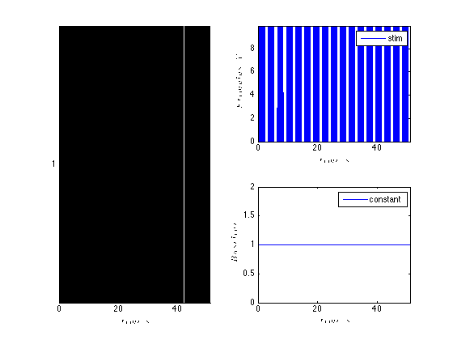
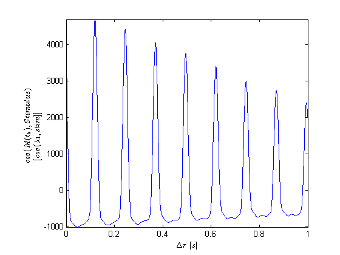
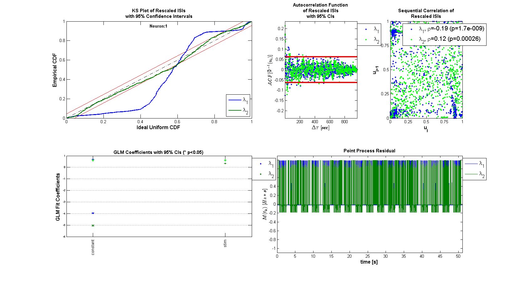
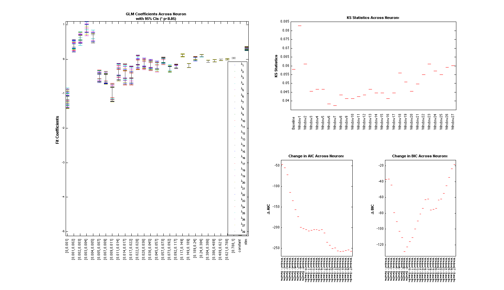
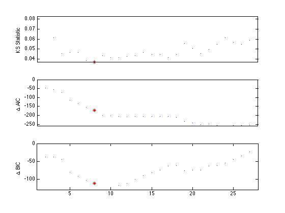
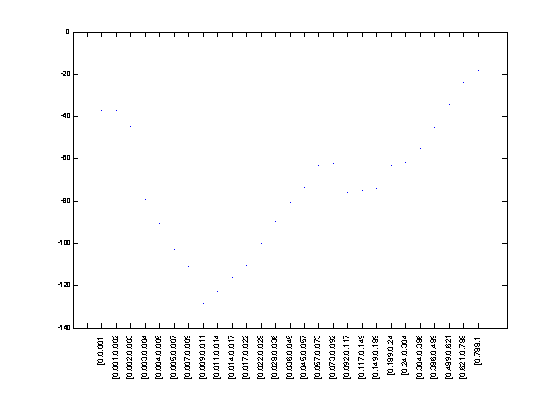
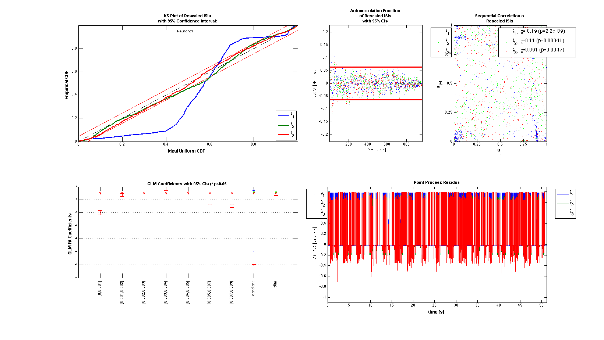

EXPLICIT STIMULUS EXAMPLE - WHISKER STIMULATION/THALAMIC NEURON
In the worksheet with analyze the stimulus effect and history effect on the firing of a thalamic neuron under a known stimulus consisting of whisker stimulation. Data from Demba Ba (demba@mit.edu)
Contents
Load the data
close all; currdir = pwd; index = strfind(currdir,'helpfiles')-1; rootpath = currdir(1:index); Direction=3; Neuron=1; Stim=2; datapath = fullfile(rootpath,'data','Explicit Stimulus',strcat('Dir', num2str(Direction)),... strcat('Neuron', num2str(Neuron)), strcat('Stim', num2str(Stim))); data=load(fullfile(datapath,'trngdataBis.mat')); time=0:.001:(length(data.t)-1)*.001; stimData = data.t; spikeTimes = time(data.y==1); stim = Covariate(time,stimData,'Stimulus','time','s','V',{'stim'}); baseline = Covariate(time,ones(length(time),1),'Baseline','time','s','',... {'constant'}); nst = nspikeTrain(spikeTimes); nspikeColl = nstColl(nst); cc = CovColl({stim,baseline}); trial = Trial(nspikeColl,cc); trial.plot; figure; subplot(2,1,1); nst2 = nspikeTrain(spikeTimes); nst2.setMaxTime(21);nst.plot; subplot(2,1,2); stim.getSigInTimeWindow(0,21).plot;

Fit a constant baseline and Find Stimulus Lag
We fit a constant rate (Poisson) model to the data and use the fit residual to determine the appropriate lag for the stimulus.
clear c; selfHist = [] ; NeighborHist = []; sampleRate = 1000; c{1} = TrialConfig({{'Baseline','constant'}},sampleRate,selfHist,NeighborHist); c{1}.setName('Baseline'); cfgColl= ConfigColl(c); results = Analysis.RunAnalysisForAllNeurons(trial,cfgColl,0); % Find Stimulus Lag (look for peaks in the cross-covariance function less % than 1 second figure; results.Residual.xcov(stim).windowedSignal([0,1]).plot; [m,ind,ShiftTime] = max(results.Residual.xcov(stim).windowedSignal([0,1])); %Allow for shifts of less than 1 second stim = Covariate(time,stimData,'Stimulus','time','s','V',{'stim'}); stim = stim.shift(ShiftTime); baseline = Covariate(time,ones(length(time),1),'Baseline','time','s','',... {'constant'}); nst = nspikeTrain(spikeTimes); nspikeColl = nstColl(nst); cc = CovColl({stim,baseline}); trial = Trial(nspikeColl,cc);
Analyzing Configuration #1: Neuron #1
Compare constant rate model with model including stimulus effect
Addition of the stimulus improves the fits in terms of the KS plot and the making the rescaled ISIs less correlated. The Point Process Residula also looks more "white"
clear c; selfHist = [] ; NeighborHist = []; sampleRate = 1000; c{1} = TrialConfig({{'Baseline','constant'}},sampleRate,selfHist,... NeighborHist); c{1}.setName('Baseline'); c{2} = TrialConfig({{'Baseline','constant'},{'Stimulus','stim'}},... sampleRate,selfHist,NeighborHist); c{2}.setName('Baseline+Stimulus'); cfgColl= ConfigColl(c); results = Analysis.RunAnalysisForAllNeurons(trial,cfgColl,0); results.plotResults;
Analyzing Configuration #1: Neuron #1 Analyzing Configuration #2: Neuron #1
History Effect
Determine the best history effect model using AIC, BIC, and KS statistic
sampleRate=1000; delta=1/sampleRate*1; maxWindow=1; numWindows=30; windowTimes =unique(round([0 logspace(log10(delta),... log10(maxWindow),numWindows)]*sampleRate)./sampleRate); results =Analysis.computeHistLagForAll(trial,windowTimes,... {{'Baseline','constant'},{'Stimulus','stim'}},'BNLRCG',0,sampleRate,0); KSind = find(results{1}.KSStats.ks_stat == min(results{1}.KSStats.ks_stat)); AICind = find((results{1}.AIC(2:end)-results{1}.AIC(1))== ... min(results{1}.AIC(2:end)-results{1}.AIC(1))); BICind = find((results{1}.BIC(2:end)-results{1}.BIC(1))== ... min(results{1}.BIC(2:end)-results{1}.BIC(1))); if(AICind==1) AICind=inf; end if(BICind==1) BICind=inf; %sometime BIC is non-decreasing and the index would be 1 end windowIndex = min([KSind,AICind,BICind]) %use the minimum order model Summary = FitResSummary(results); Summary.plotSummary; clear c; if(windowIndex>1) selfHist = windowTimes(1:windowIndex); else selfHist = []; end NeighborHist = []; sampleRate = 1000;
Analyzing Configuration #1: Neuron #1
Analyzing Configuration #2: Neuron #1
Analyzing Configuration #3: Neuron #1
Analyzing Configuration #4: Neuron #1
Analyzing Configuration #5: Neuron #1
Analyzing Configuration #6: Neuron #1
Analyzing Configuration #7: Neuron #1
Analyzing Configuration #8: Neuron #1
Analyzing Configuration #9: Neuron #1
Analyzing Configuration #10: Neuron #1
Analyzing Configuration #11: Neuron #1
Analyzing Configuration #12: Neuron #1
Analyzing Configuration #13: Neuron #1
Analyzing Configuration #14: Neuron #1
Analyzing Configuration #15: Neuron #1
Analyzing Configuration #16: Neuron #1
Analyzing Configuration #17: Neuron #1
Analyzing Configuration #18: Neuron #1
Analyzing Configuration #19: Neuron #1
Analyzing Configuration #20: Neuron #1
Analyzing Configuration #21: Neuron #1
Analyzing Configuration #22: Neuron #1
Analyzing Configuration #23: Neuron #1
Analyzing Configuration #24: Neuron #1
Analyzing Configuration #25: Neuron #1
Analyzing Configuration #26: Neuron #1
Analyzing Configuration #27: Neuron #1
Analyzing Configuration #28: Neuron #1
windowIndex =
8
 figure;
x=1:length(windowTimes);
subplot(3,1,1); plot(x,results{1}.KSStats.ks_stat,'.'); axis tight; hold on;
plot(x(windowIndex),results{1}.KSStats.ks_stat(windowIndex),'r*');
set(gca,'xtick',[]);
ylabel('KS Statistic');
dAIC = results{1}.AIC-results{1}.AIC(1);
subplot(3,1,2); plot(x,dAIC,'.');
set(gca,'xtick',[]);
ylabel('\Delta AIC');axis tight; hold on;
plot(x(windowIndex),dAIC(windowIndex),'r*');
dBIC = results{1}.BIC-results{1}.BIC(1);
subplot(3,1,3); plot(x,dBIC,'.');
ylabel('\Delta BIC'); axis tight; hold on;
plot(x(windowIndex),dBIC(windowIndex),'r*');
for i=2:length(x)
histLabels{i} = ['[' num2str(windowTimes(i-1),3) ',' num2str(windowTimes(i),3) ,']'];
end
figure;
plot(x,dBIC,'.');
xticks = 1:(length(histLabels));
set(gca,'xtick',xticks,'xtickLabel',histLabels,'FontSize',6);
if(max(xticks)>=1)
xticklabel_rotate([],90,[],'Fontsize',8);
end
  Compare Baseline, Baseline+Stimulus Model, Baseline+History+Stimulus
Addition of the history effect yields a model that falls within the 95% CI of the KS plot.
c{1} = TrialConfig({{'Baseline','constant'}},sampleRate,[],NeighborHist);
c{1}.setName('Baseline');
c{2} = TrialConfig({{'Baseline','constant'},{'Stimulus','stim'}},...
sampleRate,[],[]);
c{2}.setName('Baseline+Stimulus');
c{3} = TrialConfig({{'Baseline','constant'},{'Stimulus','stim'}},...
sampleRate,windowTimes(1:windowIndex),[]);
c{3}.setName('Baseline+Stimulus+Hist');
cfgColl= ConfigColl(c);
results = Analysis.RunAnalysisForAllNeurons(trial,cfgColl,0);
results.plotResults;
Analyzing Configuration #1: Neuron #1 Analyzing Configuration #2: Neuron #1 Analyzing Configuration #3: Neuron #1